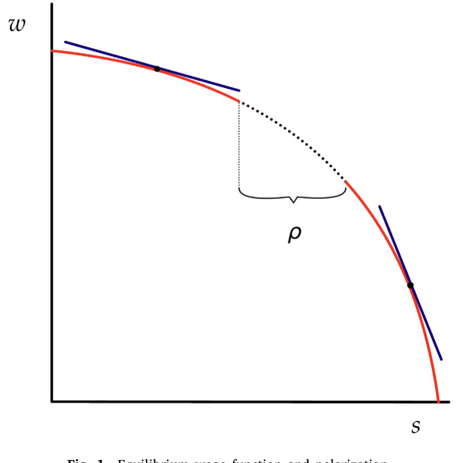
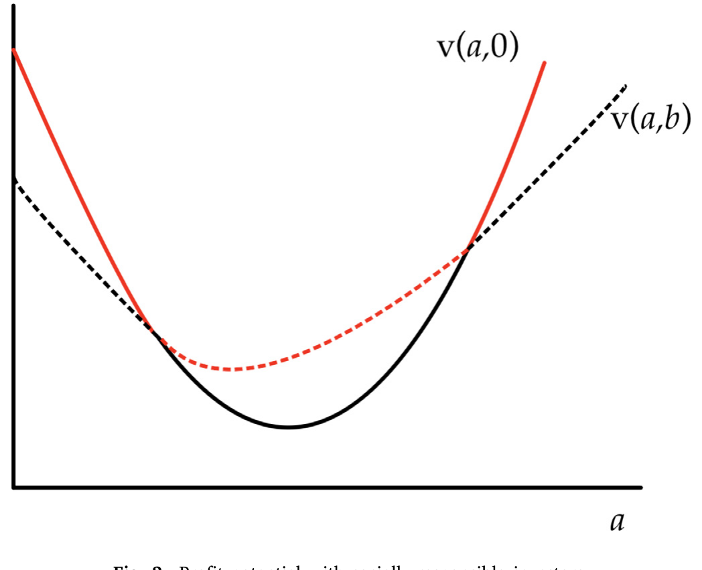
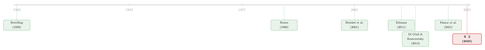

为什么公司不站在中间：极化、使命与利润
本文读的是 Ferreira & Nikolowa (2025, Journal of Financial Economics)：当工人对「工作的非货币属性」（使命、可持续、政治立场、工作条件……）有着各不相同的偏好时，企业在均衡中并不会涌向「中间选民」，反而会奔向两个极端——只雇佣偏好最强或最弱的人，抛弃中间派。于是企业不仅反映了社会偏好的极化，还放大了它。更耐人寻味的是：责任投资 (socially responsible investing) 会让这种极化进一步加剧。
1 引言：一个关于「中间」的悬念
先从一个几乎是常识的直觉说起。
经济学里有一个非常古老、也非常深入人心的结论：当大家在一条线上竞争顾客（或选民、或工人）时，所有人都会往中间挤。这就是 Hotelling (1929) 的「最小差异原理」——两家冰淇淋摊最后会背靠背地立在沙滩正中央；也是政治学里「中间选民定理」的来源。把它搬到劳动力市场上，似乎也顺理成章：既然要抢工人，那就去讨好那个「最典型」的工人——不太在意使命、也不太冷漠的那个中间派，他人数最多。
可是，如果你真的去看现实中的公司，会发现完全不是这样。
有的公司把「拯救地球」「改变世界」刻进招聘文案，愿意为了低排放工艺牺牲成本；有的公司则旗帜鲜明地只谈钱、只谈效率，对一切「使命叙事」嗤之以鼻。Sorkin (2018) 发现，补偿性工资差异 (compensating differentials)——即为了补偿工作的好坏属性而上下浮动的工资——能解释企业层面收入方差的三分之二。Krueger et al. (2023) 发现，在更「可持续」的行业里工作的人，工资要低约 10%；而 Colonnelli et al. (2023) 发现，求职者给 ESG 属性的估值也差不多是平均工资的 10%，比绝大多数其他非货币福利都高。Hedblom et al. (2019) 则发现，一家公司一旦打出「我是 CSR 企业」的广告，求职申请率立刻上升 24%。
更关键的是，人们对这些属性的偏好极其不均匀（Cassar and Meier, 2018）：有人愿意为「绿色」放弃大笔薪水，有人则完全无感。
于是一个自然的问题是：面对这样一群偏好五花八门的工人，企业到底会怎么「站队」？是像 Hotelling 说的那样挤向中间，还是别的什么？
Ferreira 和 Nikolowa 的回答，恰恰是直觉的反面：企业会极化。而且，他们用一个干净到近乎苛刻的模型证明了这一点——这个模型里没有任何摩擦。
2 一个「没有任何借口」的劳动力市场
要让一个反直觉的结论令人信服，最好的办法是把所有「方便的解释」都提前堵死。这正是本文模型的用意。
作者明确声明：模型里没有任何摩擦——竞争是完全的，信息是对称的，资本是充裕的，风险分担是完美的，没有代理问题、没有激励扭曲、没有融资约束。他们这样做不是为了「真实」，而是为了证明结论的理论稳健性：如果连在这样一个理想世界里都会出现极化，那么极化就不需要靠摩擦来解释。这样一来，模型反而成了一把尺子——用来判断未来某个经验证据「到底需不需要摩擦才能讲通」。
偏好。 经济中有质量为 \(L\) 的连续统工人。每个工人在意两样东西：工资 \(w\) 和工作的 \(s\)-质量（\(s\)-quality，可以理解为使命、可持续、政治立场、工作条件等任何正向的非货币属性）。类型为 \(\alpha\) 的工人的效用是
$$u_\alpha(s,w) = \alpha s + (1-\alpha) w, \qquad \alpha \in (0,1).$$
这里 \(\alpha\) 衡量一个人对 \(s\)-属性的相对偏好：\(\alpha\) 越大，越在意「意义」；\(\alpha\) 越小，越在意钱。\(\alpha\) 在 $(0,1)$ 上有连续密度 \(p(\alpha) > 0\)。
这个线性设定只是为了好算。作者在 Internet Appendix 里证明，只要效用是拟凹的（Cobb–Douglas、CES、拟线性等都包含在内），主要结论都成立。所以别被线性吓退——它不是结论的来源。
技术。 大量潜在企业家都是纯粹的利润最大化者。在 Date 0，企业家付一笔固定成本 \(K > 0\) 建立企业；在 Date 1，企业选择 \(s\)-质量水平 \(s \ge 0\)，付出成本 \(c(s)\)。成本函数满足 \(c'(s) > 0\)、\(c''(s) > 0\)，以及 \(c(0)=c'(0)=0\)（最后这条 Inada 条件用来排除角点解）。企业雇佣一名工人，提供合约 \((s,w)\)，产生收入 \(y > 0\)。于是净利润是：
请记住那个 \(K\)。传统的「均衡差异」(equalizing differences) 文献（源自 Rosen, 1986）通常只有可变成本 \(c(s)\)。本文的全部新意，几乎都长在这个固定成本 \(K\) 上：正因为有一笔沉没的进场费要赚回来，企业就不可能去服务那些「赚不到什么钱」的工人。至于哪些工人「赚不到钱」，下一步见分晓。
3 真正关键的一步：利润潜力为什么是 U 形的
现在到了整篇论文的「发动机」。
先问一个看似抽象、实则要命的问题：如果让一家垄断企业去匹配一个类型为 \(\alpha\) 的工人，它最多能从这个工人身上榨出多少利润？作者把这个量叫做利润潜力 (profit potential) \(v(\alpha)\)：
$$v(\alpha) := \max_{s,w}\ \pi(s,w) \quad \text{s.t.}\quad u_\alpha(s,w) \ge u,$$
其中 \(\pi(s,w) := y - w - c(s)\) 是不含沉没成本 \(K\) 的毛利润，\(u\) 是工人的外部效用（不接受合约时的保留效用）。
我们把它一步步解出来。约束在最优处取等号（多给工人效用纯属浪费利润），即 \(\alpha s + (1-\alpha) w = u\)，于是
$$w = \frac{u - \alpha s}{1-\alpha}.$$
代回毛利润，对 \(s\) 求一阶条件：
$$c'(s^*_\alpha) = \frac{\alpha}{1-\alpha}.$$
这就是论文的方程 (2)：效率 \(s\)-水平满足「工人在 \(s\) 与 \(w\) 之间的边际替代率 $=$ 生产 \(s\) 的边际成本」。因为 \(c\) 是凸的，可以反解出
$$s^*_\alpha = h(\alpha) := c'^{-1}\!\left(\frac{\alpha}{1-\alpha}\right),$$
而且 \(h(\cdot)\) 严格递增——越在意意义的人，配到的工作 \(s\)-质量越高。把它代回去，利润潜力就有了显式形式：
$$v(\alpha) = y - c\big(h(\alpha)\big) - \frac{u - \alpha\, h(\alpha)}{1-\alpha}.$$
接着是本文的第一块基石——
命题 1（利润潜力）： \(v(\alpha)\) 是严格 U 形的。
为什么是 U 形？作者给了一个极漂亮的直觉：企业「选择 \(s\)」的能力，本质上是一个实物期权 (real option)。这个期权的价值，随着「默认位置」与「企业实际合约」之间的距离增大而上升。一个偏好极端的工人（\(\alpha\) 很接近 0 或很接近 1），意味着企业可以把合约推得离「中庸」很远——要么是几乎不要 \(s\)、只给高工资的纯利润岗，要么是 \(s\) 拉满、工资压到很低的「使命岗」。无论哪一端，企业都能创造（并攫取）更多的剩余。而中间的那个工人 \(k := \arg\min_\alpha v(\alpha)\)，恰恰是企业最赚不到钱的人。
这一步是整篇论文的「真正关键」。U 形的利润潜力，意味着企业天然就偏爱极端偏好的工人；剩下要做的，只是让市场竞争和那笔固定成本 \(K\) 把这个偏好「兑现」成均衡里的极化。
作者特别指出，命题 1 的稳健性远超这个线性模型——在相当宽的条件下，任何拟凹效用都会给出 U 形的利润潜力。也就是说，U 形几乎是所有补偿性差异模型里都潜伏着的性质，只是据他们所知，这是第一篇把它点破的论文。
4 极化作为均衡：被抛弃的中间地带
有了 U 形的利润潜力，剩下的故事就顺理成章了。
首先，市场上企业的质量 \(F\) 不可能超过工人质量 \(L\)。引理 1 说，如果 \(F > L\)，工人变得稀缺，企业为抢人会把利润竞争到零；可既然进场要付 \(K > 0\)，没人会为了零利润进场。所以均衡里必然 \(F < L\)——企业比工人少。
接着，引理 2 给出竞争市场的标志性结果：所有「活跃」的岗位利润相等，\(\pi(s,w) = \pi^* > 0\)。这意味着均衡可以用一条工资函数来描述：
$$w^*(s) = y - \pi^* - c(s).$$
这其实就是一条「等利润线」(isoprofit)。注意 \(c''(s) > 0\)，所以这条工资函数是凹的——\(s\) 越高，工资越低，而且越来越低。
然后，工人沿着这条工资菜单挑选自己最满意的点。类型 \(\alpha\) 的工人解
$$\max_s\ \alpha s + (1-\alpha) w^*(s),$$
最优处，他无差异曲线的斜率 \(\alpha/(1-\alpha)\) 恰好等于工资函数的斜率 \(c'(s^*_\alpha)\)——又回到了方程 (2)，于是 \(s^*_\alpha = h(\alpha)\)。这一切都画在图 1 里。

Figure 1: Equilibrium wage function and polarization
但真正的反转在于：企业比工人少，必然有一部分工人没工作。 那么，被抛弃的是哪一部分？因为利润潜力 \(v(\alpha)\) 是 U 形的、在 \(k\) 处取最小——企业最不愿意服务的，正是中间那群人。于是被抛弃的不是两头，而是正中间的一整段区间。
把这件事写精确，就是命题 2 与它的推论。均衡由一个唯一的类型 \(z \in (k,1)\) 刻画，满足
$$F = L\left(\int_0^{\phi(z)} p(\alpha)\,d\alpha + \int_z^1 p(\alpha)\,d\alpha\right),$$
其中 \(\phi(z) \in [0,k]\) 是 \(z\) 在低端的「镜像」——它由 \(v(\phi(z)) = v(z) = \pi^*\) 定义，即与 \(z\) 利润潜力相等的那个低类型。所有 \(\alpha \le \phi(z)\) 和 \(\alpha \ge z\) 的工人被雇佣，中间的 \((\phi(z),\,z)\) 全部失业。对应的工资是
$$w^*_\alpha = y - v(z) - c\big(h(\alpha)\big), \qquad \alpha \notin (\phi(z),z).$$
推论 1（极化）： 均衡是极化的。企业只迎合偏好最极端的工人：\(p^*_d(s^*_\alpha,w^*_\alpha) > 0\) 当且仅当 \(\alpha \notin (\phi(z),z)\)。
这就是全文的核心结论。企业不仅没有挤向中间，反而把中间整段腾空。而且，作者进一步证明（推论 2，放大效应）：哪怕底层人群的偏好本身有一段空白 \([\underline{\alpha},\overline{\alpha}]\)，均衡里企业「腾空」的区间也一定比这段空白更宽——要么 \(\phi(z) < \underline{\alpha}\)，要么 \(z > \overline{\alpha}\)，或两者兼有。换句话说，企业比工人更极端：它们不只是反映社会的极化，还在放大它。
作者把这种极化的程度量化为一个可观测的指标：
$$\rho^* = s^*_z - s^*_{\phi(z)},$$
即图 1 中那段空白的「宽度」——高 \(s\) 企业里最低的 \(s\)，减去低 \(s\) 企业里最高的 \(s\)。
5 一连串可检验的横截面预言
模型一旦跑通，预言就成串地往外冒，而且都是经验研究者能下手的。
其一，工资与 \(s\) 负相关（推论 3）。 在横截面上，对任意 \(\alpha' > \alpha\)，只要两类工人都被雇佣，就有 \(s^*_\alpha < s^*_{\alpha'}\) 且 \(w^*_\alpha > w^*_{\alpha'}\)——\(s\)-质量越高的企业，付的工资越低。这正好对上了 Krueger et al. (2023) 那个「可持续行业工资低 10%」的经验事实，而模型告诉你：这未必是因为什么摩擦，纯粹是补偿性差异在竞争均衡里的自然结果。
其二，进场成本越高，越极化。 \(K\) 越大，企业越要去赚那些利润潜力最高的极端工人，腾空的中间区间越宽。
其三，更极化的行业，集中度更高、利润更高、平均工资更低、增加值中的劳动份额 (labor share) 更低。 最后这一条尤其有意思——它把「极化」直接连到了近年来宏观与公司金融都关心的劳动份额下降议题上（Autor et al., 2020; Barkai, 2020; Covarrubias et al., 2019）。在本文里，劳动份额下降不需要「超级明星企业」或市场势力，只需要偏好极化 + 固定成本。
其四，员工满意度与股票收益。 模型还能讲清一桩经验之谜。Edmans (2011) 发现员工满意度与股票收益正相关，他的解释是市场没充分定价无形资产（即存在错误定价）。本文给了一个完全不需要摩擦或错误定价的替代解释：员工满意度最高的企业，收益也最高；满意度最低的企业，收益最低——而中间未必单调。Edmans et al. (2024) 进一步发现，这种正相关在劳动力市场更灵活的国家更强——这恰恰和本文「无摩擦、自由竞争」的设定相吻合。
注意这里的微妙之处：模型并不说员工满意度和收益单调正相关。它说的是「两个尾部都高、中间未必」。如果有人拿这个模型去预测「满意度越高收益一定越高」，那是误读。
6 当投资者也开始「站队」：责任投资如何火上浇油
故事到这里还差一块——金融市场。
作者在第 4 节让企业家可以把股份卖给外部投资者，而投资者分两类：逐利投资者（\(\pi\)-investors，只在乎财务回报）和责任投资者（\(s\)-investors，愿意牺牲一部分财务收益去投那些 \(s\)-质量高的公司）。责任投资者愿意为高 \(s\) 的公司每股多付一个溢价（与 \(\beta\) 和 \(s\) 成比例）。
这相当于在企业的「利润潜力」之上，又叠加了一份来自资本市场的奖励——而且这份奖励是偏向高 \(s\) 一端的。命题 8 证明，引入责任投资者后的利润潜力 \(v(a,b)\) 仍然是 U 形的，但它把天平进一步压向了极端。直觉上：原本只有劳动力市场在奖励极端，现在资本市场也来奖励高 \(s\) 一端，于是那个被抛弃的中间区间被撑得更宽。

Figure 2: Profit potential with socially-responsible investors. workers with more extreme preferences, polarization increases when
核心结论（也写在摘要里）：可持续投资会放大企业的极化。这与「责任投资是温和的、向善的、把大家拉近」的朴素叙事正好相反——在这个框架里，它是一股离心力。
关于责任投资在均衡中到底改变了什么、代价由谁承担，本博客此前也读过几篇互补的论文：责任投资如何抬高了治理成本，可参见《良心、价格与监督：可持续投资如何悄悄抬高了治理成本》；大学捐赠基金为「责任」买单的账，可参见《良心是有价的》。本文与它们的不同之处在于：极化不是责任投资的「副作用」，而是劳动力市场本身的均衡性质，责任投资只是把它推得更远。
7 文献脉络
把这篇论文放回它的家谱里，线索其实很清楚。
最早的源头是 Rosen (1974, 1986) 的「享乐价格」与「均衡差异」框架——工作的好坏属性会被工资升贴水所补偿。这是补偿性差异整条文献的地基。与此并行的是 Hotelling (1929)、Salop (1979) 的空间竞争传统：本文把均衡描述成一个「区位博弈」，每份合约 \((s,w)\) 是平面上的一个位置，正是这条传统的回声——只不过结论从「挤向中间」翻转成了「奔向两端」。
接着，是把异质工人配置到异质企业/岗位的指派模型 (assignment models)：Tinbergen (1956)、Sattinger (1993)、Garicano and Rossi-Hansberg (2006)。本文的均衡本质上就是一个工人到企业的有效指派问题。
然后，是 2000 年以后兴起的可持续投资均衡文献：Heinkel et al. (2001) 最早把绿色投资写进企业行为，Pástor et al. (2021)、Pedersen et al. (2021) 把投资者对组合公司非货币属性的偏好做成了均衡资产定价模型。本文的第 4 节正是把这条线接到了劳动力市场上。
与此同时，一支新兴的经验文献在记录企业层面的社会与政治极化：Di Giuli and Kostovetsky (2014) 发现利益相关者的政治立场与公司 CSR 相关；Conway and Boxell (2023) 发现公司对争议议题的公开立场与其顾客、员工的偏好一致；Fos et al. (2023)、Colonnelli et al. (2025)、Steel (2024) 则记录了企业政治极化的演变与后果。本文为这一堆经验事实提供了一个统一的、无摩擦的理论解释。

本文所处的位置，是把「补偿性差异 + 指派模型 + 责任投资均衡」三股线拧成一根：它第一个点破了利润潜力的 U 形性质，并由此把劳动力市场的实与金融市场的虚整合进同一个竞争性指派框架，给出了「企业极化」这个可观测的均衡结果。
8 评论与延伸（Q&A + 研究方向）
(a) 几个可能的疑问
Q：这不就是 Hotelling 的反面吗？为什么会反过来？
关键差别在「固定成本 \(K\) + 凸的可变成本 \(c(s)\) + 利润潜力 U 形」这三者的组合。Hotelling 的经典结论里，企业争夺的是「中间那块最大的需求」；而这里，由于利润潜力在中间最低、在两端最高，加上必须赚回沉没的 \(K\)，企业理性地放弃了「人数最多但最不赚钱」的中间派。需求多 ≠ 剩余多，这是反转的根源。
Q：模型说「没有摩擦」，那它到底想说服我们什么？
它的论证策略是「举重若轻」：把所有能解释极化的摩擦（信息不对称、错误定价、融资约束、代理问题）全部关掉，看极化还在不在。结论是「还在」。所以它的贡献不是「现实就是无摩擦的」，而是提供一把基准尺——当你看到企业极化、或员工满意度与收益正相关时，先别急着归因于摩擦，因为无摩擦的世界也能产出同样的图景。
Q：「极化」在这里到底指什么？和政治极化是一回事吗？
是同构、但更一般。\(s\) 可以是任何工人在意的正向属性：使命、可持续、工作条件，也可以是政治立场。作者甚至给了一个政治捐赠的版本：令 \(\alpha \in (-1,1)\)、效用 \(u_\alpha(s,w) = \alpha s + (1-|\alpha|)w\)，\(s<0\) 表示捐给一党、\(s>0\) 捐给另一党，结论依旧是企业会做出向某一党的大额捐赠、放大人群的政治极化。所以「极化」是个关于任意可定价属性的一般陈述。
Q：U 形的利润潜力，是不是线性效用「凑」出来的？
不是。作者在 Internet Appendix 证明，对相当宽的一类拟凹效用（含 Cobb–Douglas、CES、拟线性等），只要对 \(\alpha\) 如何影响效用加一些曲率条件，\(v(\alpha)\) 的 U 形都成立。线性只是让 \(h(\alpha)\) 有唯一解、推导更干净，并不驱动结论。
Q：责任投资明明是想「向善」，为什么模型说它加剧极化？
因为责任投资者的奖励是偏向高 \(s\) 一端的：它在劳动力市场已有的「奖励极端」之上，又叠了一层来自资本市场、单边偏向高 \(s\) 的奖励。这把那个被抛弃的中间区间撑得更宽。这里没有道德判断，只是机制使然——责任投资在这个框架里是离心力，而非向心力。
Q：那条「更极化的行业劳动份额更低」的预言，能跟「超级明星企业」叙事区分开吗？
这正是它有价值的地方，也是它最该被检验的地方。Autor et al. (2020) 把劳动份额下降归于超级明星企业的市场势力；本文则给出一条平行的、纯偏好 + 固定成本的渠道。要在数据里把两者分开，需要能分别度量「行业内偏好极化」与「市场集中度」，看哪一个更能解释劳动份额——这是个干净的实证题目。
(b) 几个可能的研究问题与提案
1. 把「极化—工资—劳动份额」三角拿到数据里检验。
【经济故事】模型给出一组紧扣的横截面预言：\(s\) 越高工资越低、行业越极化则集中度越高 / 利润越高 / 劳动份额越低。这是一组能被证伪的联合假设。 【可行性】中。难点在度量 \(s\)-质量与「偏好极化」。可用 Glassdoor / 招聘文案文本、ESG 评分、企业政治捐赠（FEC 数据）构造 \(s\)，用行业内 \(s\) 的离散度度量 \(\rho^*\)，再配 Compustat 的劳动份额。识别上偏相关易得，因果难，需要一个能外生移动「进场成本 \(K\)」或「偏好极化」的冲击。
2. 责任投资资金流入是否真的放大了企业极化？
【经济故事】命题预测：可持续资本越多，高 \(s\) 一端被推得越远。可持续基金 (ESG funds) 规模在 2015 年后的爆发式增长，提供了一个时间序列上的「处理强度」。 【可行性】中。可用 ESG 基金持股份额作为企业面临的「责任资本压力」，看其 \(s\)-质量（如排放强度、社会议题立场）是否随之走向极端。识别要小心反向因果（高 \(s\) 公司吸引 ESG 资金），可考虑用指数纳入 / 基金被动配置规则做工具变量。可与本博客读过的《三万五千亿美元的 ESG，到底「倾斜」了多少？》对照。
3. 把这套逻辑搬到公司债 / 信用市场：「绿色」债券发行人是否也在极化？
【经济故事】如果责任投资者在股权市场上把企业推向极端，那么在信用市场，绿色 / ESG 债券的投资者偏好是否也在把发行人推向「要么极绿、要么完全不装」的两端？发行人在「贴绿标」上的选择，可能同样是 U 形利润潜力的产物。 【可行性】中偏低。需要绿色债券发行明细（如 Bloomberg / CBI 数据库）、发行人 ESG 画像，以及债券定价（绿色溢价 greenium）。识别难点是「贴标」的内生性。可与《绿色溢价真的归零了吗？》、《给「绿色」贴个标签，到底值多少钱？》互补。这是把本文最自然地延伸到信用市场的方向。
4. 把固定成本 \(K\) 显式参数化，做结构估计。
【经济故事】模型把极化的强弱直接系在 \(K\) 上。如果能在一个行业里估出 \(c(s)\) 与 \(K\)，就能反推该行业「应有」的极化程度，并用它来评估责任投资政策的影响。 【可行性】低。结构估计需要对成本函数和偏好分布做强假设，且 \(K\) 与 \(c(s)\) 在数据里高度难分。更适合作为单一行业（如能源或科技）的深耕案例，而非通用方法。
5. 工人生产率与偏好 \(\alpha\) 相关时，极化会怎样？
【经济故事】本文假设所有工人同等生产率。但 Colonnelli et al. (2023) 发现，ESG 偏好更强的工人往往也更有能力。若 \(\alpha\) 与生产率正相关，企业奔向高 \(s\) 一端时还会顺带捞到高能力工人，极化可能与「人才流向」纠缠在一起。 【可行性】中。理论上是本文一个干净的扩展（作者自己也点到但未做）；实证上可用 LinkedIn / 招聘平台的「人才流动」数据，检验高能力人才是否系统性流向高 \(s\) 企业。
9 我的判断
贡献。 这是一篇「以简驭繁」的理论佳作。它最漂亮的地方有两点：其一，把「企业极化」这个看似需要行为偏差、政治叙事或市场势力才能解释的现象，化约成一个无摩擦竞争均衡里利润潜力 U 形 + 固定成本的必然结果——一个干净的基准；其二，它把劳动力市场的实与金融市场的虚（责任投资）整合进同一个指派框架，并得出「责任投资是离心力」这个反直觉、却可检验的结论。利润潜力 U 形的命题 1，几乎肯定会成为后续补偿性差异文献的一块标准积木。
对识别（在这里是「对模型说服力」）的担忧。 第一，结论高度依赖「固定成本 \(K\) + 利润潜力在中间取最小」这一组合；现实中若工人偏好分布本身是单峰且集中的，中间区间被腾空的程度可能很小，极化未必显著——模型给的是定性方向，量级要靠数据。第二，「一企业一工人」的设定虽便于刻画指派，但把企业内部的偏好聚合（一家大公司里既有极绿又有极不在乎的员工）这个现实复杂性抽象掉了；多工人企业里，极化是发生在企业之间还是企业之内，是个开放问题。第三，第 4 节责任投资部分依赖具体的函数形式（如 \(v(a,b)\) 的二次结构），其稳健性不如劳动力市场那一半透明。
后续最想看到的。 我最想看到第 5 节那串横截面预言被认真地拿到数据里跑一遍——尤其是「更极化的行业劳动份额更低」这一条，它能不能在控制了市场集中度之后仍然站得住，将直接决定本文是一个「漂亮的理论可能性」还是一个「真实的经济机制」。其次，把这套逻辑延伸到公司债与信用市场（提案 3），是我认为最有空间、也最契合当下责任投资浪潮的方向。
参考文献
- Autor, D., Dorn, D., Katz, L. F., Patterson, C., Van Reenen, J. (2020). The fall of the labor share and the rise of superstar firms. Quarterly Journal of Economics 135(2), 645–709.
- Barkai, S. (2020). Declining labor and capital shares. Journal of Finance 75(5), 2421–2463.
- Cassar, L., Meier, S. (2018). Nonmonetary incentives and the implications of work as a source of meaning. Journal of Economic Perspectives 32(3), 215–238.
- Colonnelli, E., McQuade, T., Ramos, G., Rauter, T., Xiong, O. (2023). Polarizing corporations: Does talent flow to "good" firms? Working Paper.
- Conway, J., Boxell, L. (2023). Consuming values. Working Paper, U. of Chicago.
- Di Giuli, A., Kostovetsky, L. (2014). Are red or blue companies more likely to go green? Politics and corporate social responsibility. Journal of Financial Economics 111(1), 158–180.
- Edmans, A. (2011). Does the stock market fully value intangibles? Employee satisfaction and equity prices. Journal of Financial Economics 101(3), 621–640.
- Edmans, A., Pu, D., Zhang, C., Li, L. (2024). Employee satisfaction, labor market flexibility, and stock returns around the world. Management Science 70(7), 4167–4952.
- Ferreira, D., Nikolowa, R. (2024). Prestige, promotion, and pay. Journal of Finance 79(1), 505–540.
- Ferreira, D., Nikolowa, R. (2025). Polarization, purpose and profit. Journal of Financial Economics 172, 104147.
- Garicano, L., Rossi-Hansberg, E. (2006). Organization and inequality in a knowledge economy. Quarterly Journal of Economics 121(4), 1383–1435.
- Hedblom, D., Hickman, B. R., List, J. A. (2019). Toward an understanding of corporate social responsibility: Theory and field experimental evidence. NBER Working Paper 26222.
- Heinkel, R., Kraus, A., Zechner, J. (2001). The effect of green investment on corporate behavior. Journal of Financial and Quantitative Analysis 36(4), 431–449.
- Hotelling, H. (1929). Stability in competition. Economic Journal 39(153), 41–57.
- Krueger, P., Metzger, D., Wu, J. (2023). The sustainability wage gap. ECGI Working Paper 718/2020.
- Pástor, L., Stambaugh, R. F., Taylor, L. A. (2021). Sustainable investing in equilibrium. Journal of Financial Economics 142(2), 550–571.
- Pedersen, L. H., Fitzgibbons, S., Pomorski, L. (2021). Responsible investing: The ESG-efficient frontier. Journal of Financial Economics 142(2), 572–597.
- Rosen, S. (1974). Hedonic prices and implicit markets: Product differentiation in pure competition. Journal of Political Economy 82(1), 34–55.
- Rosen, S. (1986). The theory of equalizing differences. Handbook of Labor Economics 1, 641–692.
- Salop, S. C. (1979). Monopolistic competition with outside goods. Bell Journal of Economics 10(1), 141–155.
- Sattinger, M. (1993). Assignment models of the distribution of earnings. Journal of Economic Literature 31(2), 831–880.
- Sorkin, I. (2018). Ranking firms using revealed preference. Quarterly Journal of Economics 133(3), 1331–1393.
- Tinbergen, J. (1956). On the theory of income distribution. Weltwirtschaftliches Archiv 77, 155–175.